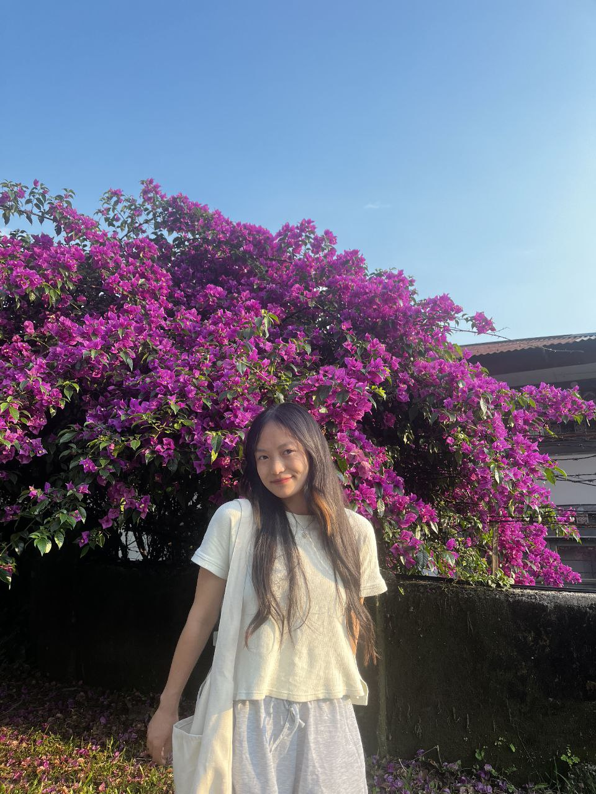

About Me 🍓🎀

Hi, My name is Kelzang Choden, but you can call me Kaycee. I am currently pursuing a B.Ed. in ICT (Secondary) at Samtse College of Education, and I graduated from Jigmesherubling Higher Secondary School.
I am skilled in Microsoft PowerPoint, Word, Excel, and I have a basic understanding of coding.
In my free time, I enjoy watching anime —some of my favorites are One Piece, Hunter x Hunter, and Kamisama Kiss. I also like knitting, reading, and I have a soft spot for cats.
This is my cat .jpg)
I’d describe myself as an ambivert: I enjoy small circles of friends but can also confidently interact with strangers. As a Leo, I’m confident and expressive, though I tend to be cautious when it comes to trust.

Some things I’m proud of include creating a class presentation that impressed my teachers, helping a friend learn basic coding, and organizing my study notes in a way that helped me and my peers.
I’m passionate about learning new skills, exploring technology, and finding creative ways to make everyday tasks more enjoyable.